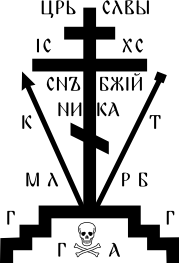
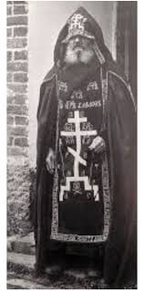
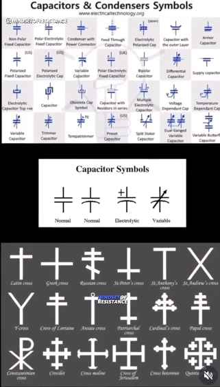
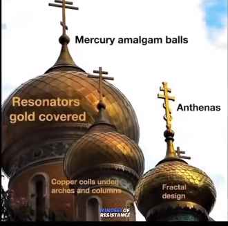
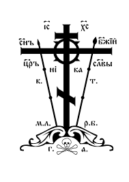

GOLGOTHA CROSS

Introduction
From its origins in ancient Rome to its place in modern Christian worship, the Golgotha cross (also known as the crucifixion cross) is a powerful symbol that has inspired millions of people around the world.
The Golgotha cross is a fascinating and intricate symbol of Christianity, steeped in history and meaning. Its name comes from the hill upon which Jesus was crucified, where Adam, the first man, is believed to be buried.
Literary
Some believe that the slope in the foot panel is not only a symbol of the two thieves, but that it is an invisible door: the high side opens a path to heaven, and the low one opens a path to hell, and that by carrying this cross the monk “carries with him the keys to eternity.”
The common people sometimes believed that the skull was not only a symbol of Adam, but also had the magical power to ward off death from its bearer, so it was said that whoever carried this cross "never dies except as a saint or a martyr."

Folkloric and semiological studies explain that the cross was a pre-Christian solar and ritual symbol, then evolved into a Christian religious symbol.
In engineering communities, people discuss that some ancient symbols or electrical diagrams look unfamiliar and may be misinterpreted by non-experts as religious symbols.
Some may think that the cross took its design idea from scientific or engineering symbols, such as the capacitor. Some say the Christian cross existed centuries before the advent of electricity or electrical diagrams. Others say this is true.
Some believe that the + sign or cross on some electrical components protects against evil or is a kind of blessing (superstition), but there are no reliable sources to support this idea.

This conspiracy theory says that the cross's similarity to symbols such as the capacitor or antenna is evidence that monks and the Church borrowed these symbols from Tartarian lore and covered them with a religious veneer.
Some associate the cross and onion domes of Russian churches and say that they were "energy generators" in the time of Tartary.
Proponents of the so-called Lost Tartarian Empire (a conspiracy theory that a great civilization existed a few hundred years ago and was then disappeared) claim that many religious and geometric symbols (such as the cross) originated in Tartaria.
Some associate the multi-armed Orthodox cross with geometric/energy symbols that they say are "Tartarian" technological, such as free energy antennas or electrical circuits.
It is claimed that the cross in its form is not originally a Christian symbol, but rather an "energy/technical symbol" used in ancient Tartaria for energy management or as part of a global architectural network.
Facebook Group — “Old Historical Photos”:There is a post claiming that a so-called “resonator mercury ball generator” was installed above the domes, and that the crosses acted as antennas collecting “etheric energy” from the atmosphere.

YouTube: “Churches were Free Energy generators NOT built by Tartaria : They claim that churches, cross statues, and other objects were part of “energy generators” structures that acted as receivers or transmitters of free or cosmic energy.
Symbols
The skull
The skull represents the head of Adam, according to Christian tradition. Some accounts say that Christ was crucified on the burial site of Adam, and that through his death Adam's sin was forgiven.
The Arrows
Arrows or side signs indicate the way to heaven (right thief). The way to hell (left thief).
Research
Similar shapes

This adds a layer of symbolism to the cross, as it represents the new Adam, Jesus Christ, coming to cleanse the sins of the first Adam through his death. The cross itself features a Byzantine or modern Orthodox design with multiple horizontal crossbeams and a slanted footrest beam.
Inscriptions on the cross include the abbreviation of “Jesus of Nazareth, King of the Jews,” as well as various symbols in Greek or Slavonic, such as “Mother of God” and “Conquer.”
Some medieval Russian soldiers tattooed the Golgotha Cross on their shields or bodies, believing it gave them invincibility in battle.